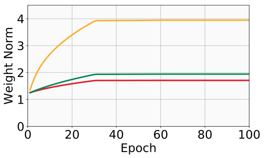
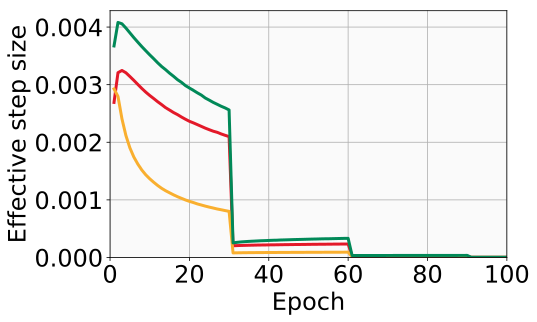
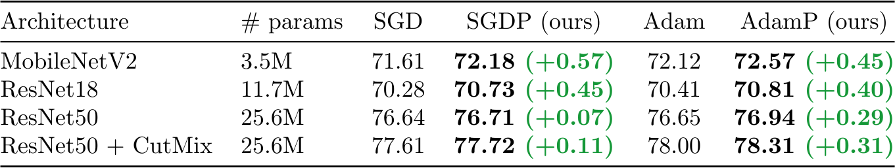
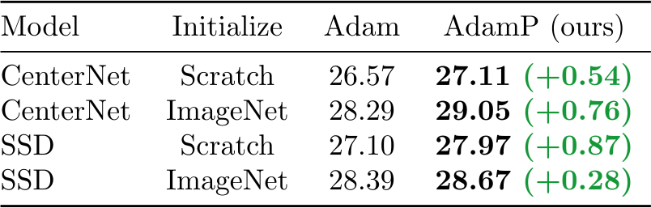
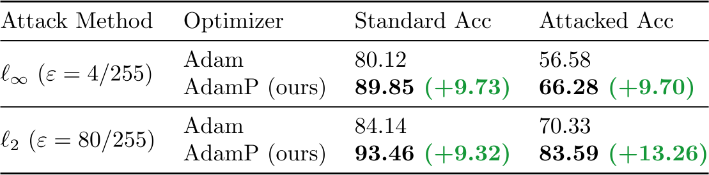
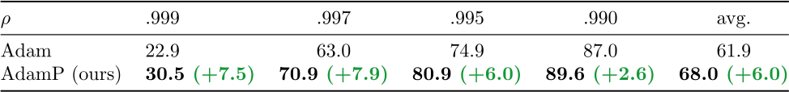
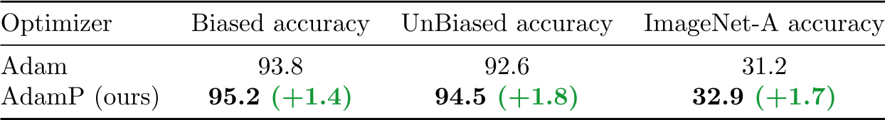
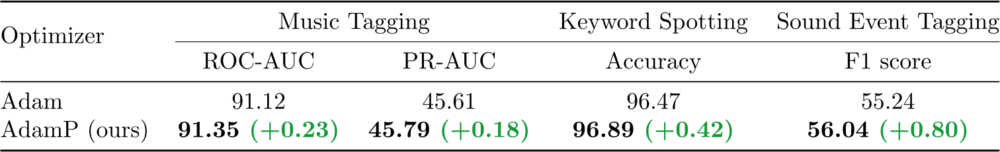
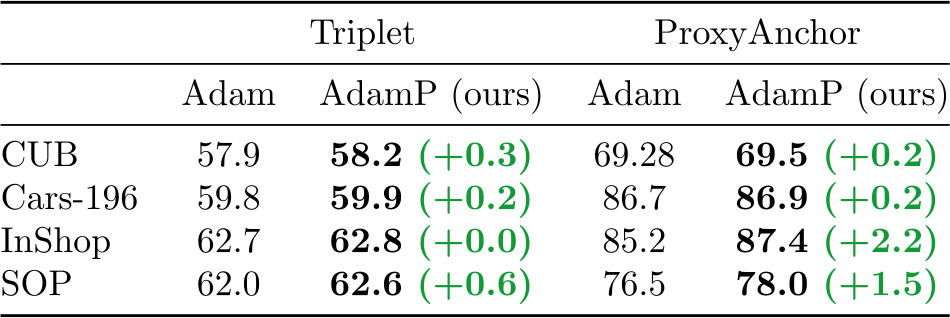

Slowing Down the Weight Norm Increase in Momentum-based Optimizers
Byeongho Heo✱, Sanghyuk Chun✱, Seong Joon Oh, Dongyoon Han, Sangdoo Yun, Youngjung Uh, Jung-Woo Ha
✱ indicates equal contribution
Clova AI Research, NAVER Corp.
Summary
- Widely-used normalization techniques in deep networks result in the scale invariance for weights. We show that momentum-based optimizers, when applied on such scale-invariant parameters, result in an excessive growth of weight norms during training.
- This is problematic because the effective optimization step sizes are inversely proportional to the weight norm; the premature decay of effective step sizes may lead to sub-optimal model performances.
- We propose a projection-based solution that regularizes the momentum-induced norm growth and improves model performances. The proposed method is readily adaptable to existing gradient-based optimization algorithms like SGD and Adam. We named their modifications as SGDP and AdamP, respectively.
- A wide set of experiments, including ImageNet classification, MS-COCO object detection, adversarial training, cross-bias generalization, audio classification tasks, and image retrieval tasks, shows the versatility and effectiveness of our method.
Problem: Momentum induces an excessive growth of weight norms
2D Toy example
Below, we illustrate how the momentum-SGD drastically boost up the increase in the weight norms compared to the momentum-less SGD and SGDP (ours). First, we simulate three different opimizers on 2D Toy example: \( \min_w -\frac{w}{\| w \|_2} \cdot \frac{w^*}{\| w^* \|_2} \) where w and w* are 2-dimensional vectors. The problem is identical to maximizing the cosine similarity between two vectors. Note that the optimal w is not unique: if \(w^*\) is optimal, then \(c w^*\) is also optimal for \(c > 0\). In the following videos, we observe that the momentum-SGD shows fast initial updates, but also shows excessively fast norm increases (from 1 to 2.93 for momentum 0.9 and from 1 to 27.87 for momentum 0.99), resulting in a slower convergence. Note that a larger momentum induces faster norm increases. Vanilla SGD shows slow initial step sizes, and a reasonable convergence rate towards the end of the training. On the other hand, SGDP (ours) shows a rapid convergence rate, preventing the excessive norm growth and achieving the fastest convergence rate.
Momentum = 0.9
Momentum = 0.95
Momentum = 0.99
Empirical analysis of SGD variants on ImageNet
We train ResNet18 on ImageNet with vanilla SGD, momentum SGD, and SGDP (ours). We measure the average L2 norm of the weights, average effective step sizes, and accuracies at every epoch. The step decay learning rate scheduling is used: multiply with factor 0.1 at every 30 epochs. Compared to vanilla SGD, momentum SGD exhibits a steep increase in \( \| w \|_2 \), resulting in a quick drop in the effective step sizes. SGDP (ours), on the other hand, does not allow the norm to increase far beyond the level of vanilla SGD. It maintains the effective step size at a comparable magnitude as the vanilla SGD does. Final performances reflect the benefit of the regularized norm growths. While momentum itself is a crucial ingredient for improved model performances, further gain is possible by regularizing the norm growth (momentum SGD: 66.6% accuracy, SGDP (ours): 69.0% accuracy). SGDP (ours) fully realizes the performance gain from the momentum by not overly suppressing the effective step sizes.
Weight norms
Effective step sizes
Accuracies

Algorithm
We propose a simple and effective solution: at each iteration of momentum-based GD optimizers (e.g. SGD or Adam) applied on scale-invariant weights (e.g. Conv weights preceding a BN layer), we remove the radial component (i.e. parallel to the weight vector) from the update vector (See the below figure). Intuitively, this operation prevents the unnecessary update along the radial direction that only increases the weight norm without contributing to the loss minimization. The proposed method is readily adaptable to existing gradient-based optimization algorithms like SGD and Adam. Their modifications, SGDP and AdamP are shown in the below figures. (Modifications are colorized).


Experimental results
We experiment over various real-world tasks and datasets. From the image domain, we show results on ImageNet classification, object detection, and robustness benchmarks. From the audio domain, we study music tagging, speech recognition, and sound event detection. Finally, the metric learning experiments with l2 normalized embeddings show that our method works also on the scale invariances that do not originate from the statistical normalization. In the above set of experiments, we show that the proposed modifications (SGDP and AdamP) bring consistent performance gains against the baselines (SGD and Adam).
ImageNet classification. Accuracies of state-of-the-art networks (MobileNetV2, ResNet, and CutMix-ed ResNet) trained with SGDP and AdamP.
MS-COCO object detection. Average precision (AP) scores of CenterNet and SSD trained with Adam and AdamP optimizers.
Adversarial training. Standard accuracies and attacked accuracies of Wide-ResNet trained on CIFAR-10 with PGD-10 attacks.
Robustness against real-world biases (Biased-MNIST). Unbiased accuraccy with ReBias.
Robustness against real-world biases (9-Class ImageNet). Biased / unbiased / ImageNet-A accuraccy with ReBias.
Audio classification. Results on three audio classification tasks with Harmonic CNN.
Image retrieval. Recall@1 on CUB, Cars-196, InShop, and SOP datasets. ImageNet-pretrained ResNet50 networks are fine-tuned by the triplet (semi-hard mining) and the ProxyAnchor (PA) loss.
